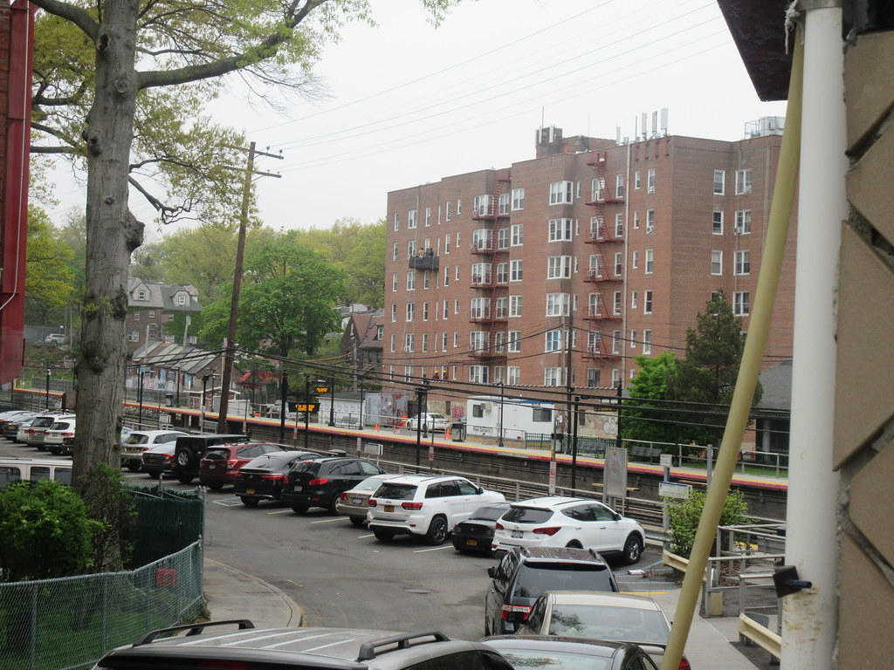
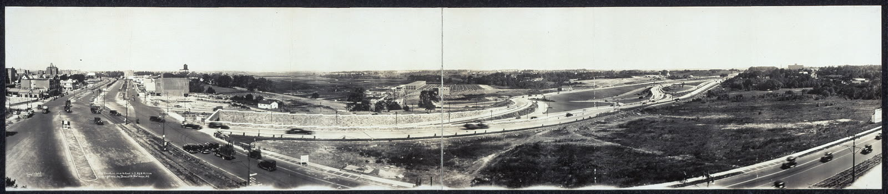
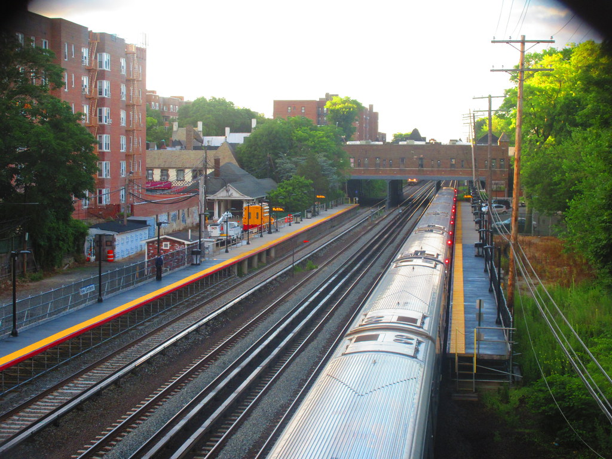
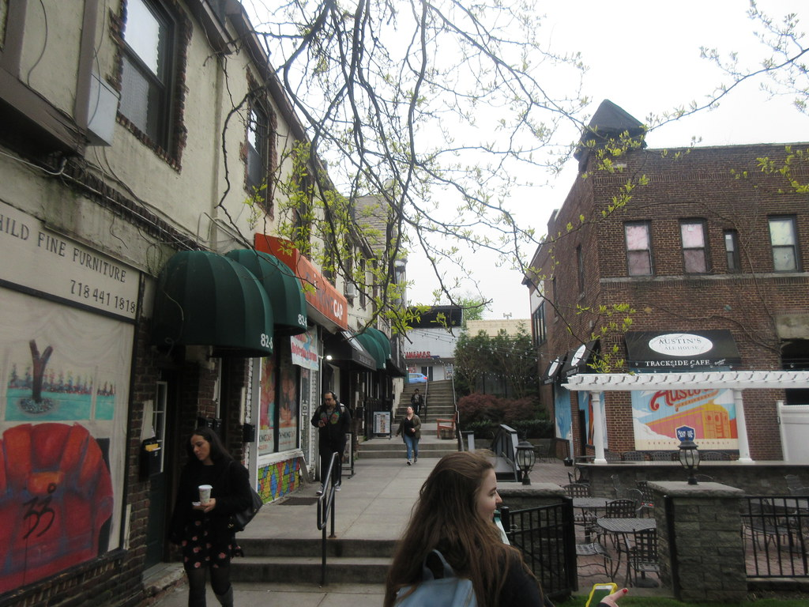
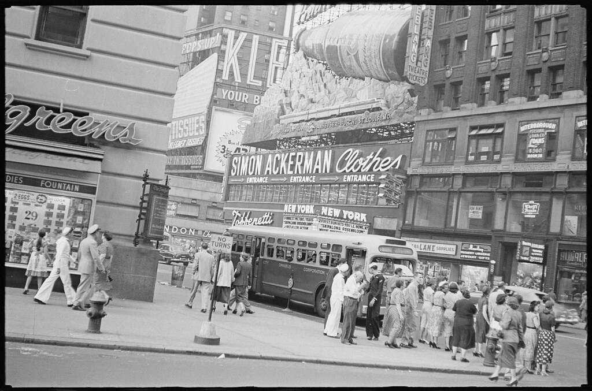

Sunday · Psych / soc
Kitty Genovese (1964): thirty-eight witnesses, and the story psychology told
A Kew Gardens murder, a New York Times parable, the bystander effect — and the later correction that fewer people saw, and some people acted.

{kind=link}
Kitty Genovese was a person, not a teaching aid. This capsule does not describe wounds and does not use a corpse as a figure. The New York Times story of “38 witnesses” is treated as a historical object that psychology used — and that later historians and psychologists, especially Manning, Levine, and Collins (American Psychologist, 2007), showed was not supported by the record. The bystander-effect experiments are a separate object from the parable.
Select any words, or tap a dotted term.
- 13 Mar 1964 Kew Gardens Genovese is attacked near her home after work. She dies. A neighbor, Sophia Farrar, goes to her.
- 27 Mar 1964 The Times Martin Gansberg’s New York Times story: 37 (later 38) who saw and did not call. The parable is set.
- 1968–70 The lab Latané and Darley publish the bystander studies the parable helped to authorize.
- 2007 The correction Manning, Levine, and Collins: no good evidence for 38 watchers, or for total inaction.
- 2014–16 The books A second public correction, including Kevin Cook’s Kitty Genovese. Textbooks begin, unevenly, to catch up.
- now The double lesson What groups do to helping — and what a discipline does when it falls in love with a story.
Before
A neighborhood, a station, a night shift
in 1964 was a Queens neighborhood organized around a Long Island Rail Road station, a few bars and shops, and apartment houses that looked at one another across a small street. Catherine “Kitty” Genovese, 28, managed a bar. She was driving home in the early hours of 13 March when she was attacked near the station. She was a person going home. That is the whole of the “before” this capsule needs.


{kind=link}
The era
A crime, a newspaper, a laboratory
Winston Moseley attacked Genovese, left, and came back. She died. A neighbor, , went to her. Other neighbors heard something; some looked; at least one account has a man shouting from a window; some contact with the police happened, in ways the later flattened. The trial established a killer. It did not establish a stadium of watchers.

{kind=link}
On 27 March 1964 the New York Times published Martin Gansberg’s story, headed as a murder and did not call the police. Thirty-eight became the number that stuck. A. M. Rosenthal, at the Times, made the story a civic diagnosis: the city had gone cold. That diagnosis is a 1964 New York object — crime, race, a newspaper’s voice — as much as it is a fact about one street.
Social psychology took the story as a gift. and designed experiments in which smoke filled a room, or a cry for help came from another room, and the variable was whether other people were present. People helped less when they were not alone. ; . Those studies replicated. They are the science. The are the hook the science used in its textbooks.
The same years, elsewhere: 1964 is also Freedom Summer, the Civil Rights Act, Tokyo’s Olympics, the Gulf of Tonkin. is not the world’s only street. This capsule stays on this street because the case is about how a local crime became a universal lesson — and what got trimmed to make the lesson travel.

People
The woman, the neighbor, the reporters, the lab
Catherine “Kitty” Genovese
1935–1964
Born in Brooklyn, lived in , managed a bar. The capsule uses her name and her dates. It does not use her body as a figure. The 1961 police photograph that circulates online is a booking photo from another year. It is not used here.
Sophia Farrar
neighbor
Went to Genovese, held her, waited for help. If the needs a moral, start with the person who crossed the street — and with the fact that the left her out.
Martin Gansberg / A. M. Rosenthal
The Times, 1964
The reporter and the editor who made 37/38 a national sentence. Journalism is an actor in this case, not a window.
Latané and Darley
1960s–70s papers
The experimenters. Their results about groups and helping do not become false if the newspaper story shrinks. That is the distinction this capsule exists to keep.
A story
The parable of the 38
In 2007, in American Psychologist, Rachel Manning, Mark Levine, and Alan Collins went back to the archive. They argued there is no good evidence that 38 people witnessed the murder, that they watched it through, or that they all remained inactive. Some people could not see. Some heard and did not understand. Some did act. The Times story had become, in their word, a : a tale about the danger of the group that textbooks needed, and that then limited what the field asked next — for example, how a group can also make helping more likely.
A discipline can be right about a mechanism and wrong about a corpse. Both parts of that sentence have to stay.
After
Textbooks, and a slower correction
The remained one of social psychology’s most taught results. The 38-witnesses story remained, for a long time, the first paragraph. Later textbooks began to qualify it; some did not. A 2015 study of intro texts found the old story still in circulation. Correction in a science is not only a 2007 paper. It is whether the next edition deletes a sentence.
The case now teaches two things, if it is taught honestly: how the presence of others can inhibit help — and how a field tells itself origin stories. Kitty Genovese is not improved by being useful. She is owed a street that is not only a graph.
A question
Leave this on the table
When a science needs a parable, whose life gets simplified to make the moral travel?
Fun fact
The Times story is two weeks later, not the next morning
Genovese was killed on 13 March 1964. Gansberg’s New York Times article ran on 27 March. The parable was not a live dispatch from the sidewalk. It was a constructed account, two weeks on, that already knew what it wanted the city to mean. That gap is part of how a crime became a syllabus.